Bienvenue sur la page de candidature citoyenne de Volt France !
Sur ce site, vous pouvez vous inscrire en tant que candidat-citoyen aux élections auxquelles nous essayons de participer. Pour mieux connaître notre mouvement et savoir comment ça fonctionne, continuez à lire. Pour vous inscrire directement, suivez le lien ci-dessous.
Les législatives
Nous sommes à la recherche de candidats pour se présenter avec nous. Il n'est pas obligatoire de devenir membre de Volt pour se présenter, mais nous en serions heureux bien sûr. Il y a trois types de candidatures :
-
Candidature symbolique « Pour l'Europe »
Aidez-nous à être visibles avec une candidature symbolique. Pas besoin de faire campagne, mais nous aimerions coller des affiches et avoir des bulletins aux bureaux de vote.
-

Candidature « Plus 1% »
Aidez-nous à nous qualifier pour le financement public qui exige un score de plus de 1% dans au moins 50 circonscriptions. Vous avez déjà une certaine expérience en matière de campagne et souhaitez l'utiliser pour être visible pendant les élections.
-
Candidature « Pour Gagner »"
Vous pensez pouvoir gagner une circonscription et avez de l'expérience dans la mise en place d'une équipe de campagne et dans la gestion de votre campagne. Travaillons ensemble !
Comment fonctionne une candidature ?
Investiture par la CNI
Après avoir envoyé le formulaire, nous vous contacterons et préparerons un dossier. Nos candidat·e·s sont investi·e·s par notre Commission Nationale d'Investiture (CNI) composée du bureau, du conseil régional, des secrétaires généraux et des conseillers. La CNI se réunit toutes les deux semaines pour voter sur les candidat·e·s.Plus d'informations sur notre site web.
Préparation de la campagne
Nous rechercherons ensemble votre suppléant·e et le mandataire financier et préparerons les documents administratifs. Nous vous fournirons votre page web de candidat·e (photo, courte biographie, trois choses que vous aimeriez changer) et des visuels pour les affiches et les bulletins.
Collecte de fonds
Nous estimons les coûts à 500€ pour les candidatures symboliques (bulletins et affiches) et à au moins 2500€ pour les candidatures de campagne. Nous allons essayer de lever les fonds pour les candidatures symboliques (n'hésitez pas à nous aider, 330€ d'un don de 500€ sont déductibles des impôts) et aider les candidats en campagne dans leurs efforts de collecte de fonds.
Faire campagne
Les candidat·e·s qui font réellement campagne sont invité·e·s à demander des coachings et une aide à la communication. Nous fournirons également une analyse de la circonscription par bureau de vote et un guide du candidat avec toutes les informations et outils nécessaires pour planifier votre campagne.
Volt, c'est quoi ?
Volt a été créée le jour le vote pour le Brexit a été annoncé et depuis a grandi pour être présent dans plus de 30 pays européens avec des partis politiques établis dans quatorze entre eux. Nous sommes un mouvement de citoyens qui se portent volontaires pour travailler vers une façon de faire de la politique plus progressiste, plus participative et plus paneuropéenne - en mettant l'accent sur la redéfinition de ce que les principes écologiques, la solidarité et la démocratie devraient signifier au 21eme siècle.
Plus d'informations sur Volt
Nos politiques sont cadrées par le respect des valeurs suivantes :
-
Dignité Humaine
Nous croyons en l’inaltérable dignité de l’être humain. Ce respect et cette valorisation de chaque être humain est au coeur de notre conception politique. Nous croyons qu’aucun être humain n’est le même qu’un autre et que cette diversité enrichit notre société.
-
Égalité
Nous croyons en le droit de chacun d’être capable de décider de son propre destin, quelles que soient leur origine ou leurs valeurs. Nous croyons que chaque être humain doit être en mesure de débloquer totalement leur potentiel selon leur propre définition, qui qu’ils soient. Nous croyons que chacun doit être capable de participer activement à la société.
-
Justice
Par défaut, tout le monde est égal devant la loi, et les lois ne doivent pas viser des individus. Nous combattons toute forme de discrimination car nous pensons que chaque être humain doit être capable de dévoiler l’intégralité de son potentiel, peu importe qui ils sont. De plus, les citoyens doivent pouvoir croire en la fiabilité et en la justice de leur État.
-
Liberté
Nous croyons que l’individu doit être libre de vivre sa liberté et d’exprimer sa personnalité, tant qu’elle n’empiète pas sur les droits d’un autre. La personne n’est pas seulement un citoyen, mais aussi un individu privé, qui doit être en mesure de vivre leur potentiel en dehors de la dimension politique. De plus, l’Etat doit toujours préférer informer les citoyens et leur permettre plutôt que les forcer.
-
Solidarité
Nous sommes l'Europe et l'Europe est nous. Si nous comprenons que notre futur individuel est intrinsèquement lié à la destinée de tous les autres européens, nous pouvons pleinement comprendre que la solidarité est au fondement de notre société européenne. Nous croyons que la solidarité devrait guider nos actes individuels et collectifs, et par la même nos politiques. Aucun citoyen, aucune région, aucun pays ne doivent être laissés de côté.
-
Soutenabilité
Notre objectif est de progresser vers un meilleur futur, ce qui explique pourquoi nous pensons que la soutenabilité est un élément-clé. Nos économies, notre comportement individuel, et l’administration de nos Etats doivent être construits durablement, en termes de nature, de finance, ou de n’importe quelles autres ressources communes.
... et nous travaillons au niveaux Européen, nationaux et locaux dans les cinq et un défis suivants:
-

L'État Intelligent
Les “États intelligents” doivent adopter de nouveaux outils pour gagner la confiance de leurs citoyens à travers une gouvernance responsable, transparente et efficace. Nous investirons dans notre futur commun, comprenant des systèmes d’éducation innovants, un système de santé de qualité. Ensemble, nous utiliserons la technologie pour une prospérité commune.
-

La Renaissance Economique
Les économies européennes ont besoin de devenir le moteur du progrès de la société et permettre un niveau de vie décent pour chacun. Cela requiert des politiques pour réduire la bureaucratie, renforcer le marché du travail, raviver l’innovation dans nos économies, investir dans une productivité intelligente et durable et s’attaquer au chômage et créer un système social et fiscal européen plus unifié.
-

Égalité Sociale
Les citoyens et résidents de l’Union européenne doivent se voir garantir des droits et opportunités égaux, et les droits de l’Homme doivent être respectés et appliqués ! Pour s’assurer de cela, nous souhaitons introduire des politiques s’attaquant à tous les types d’inégalités et de discriminations, réduisant la pauvreté et fournissant un accès aux besoin fondamentaux. Plus important encore, personne ne doit être laissé de côté !
-

Équilibre global
L’Europe a besoin d’assumer la responsabilité pour son rôle dans les challenges globaux, en particulier ceux concernant le changement climatique, la sécurité alimentaire, la santé publique, la migration et les crise de réfugiés. Nous avons pour but de mener des actions afin d’éradiquer la pauvreté, générer des emplois, construire une économie circulaire, assurer un commerce juste, sécuriser des moyens de subsistance et construire des infrastructures pour un développement et une croissance durables.
-

Responsabilisation des citoyens
Ce challenge montre à quel point les citoyens peuvent avoir une influence plus directe sur leur gouvernement, quel genre d’informations les gouvernements devraient publier et comment les citoyens peuvent être informés de manière optimale afin de participer à la vie démocratique. Cela signifie que nous recherchons les meilleures pratiques de participation citoyenne, la transparence, des moyens de structurer les médias publics et la sauvegarde de notre vie privée.
-

Réforme de l’UE
Le projet européen a permis 70 ans de paix et de stabilité sur notre continent. Toutefois, l’UE a été secouée par des crises et la montée de l'euroscepticisme. Afin de nous baser sur ses réalisations précédentes, l’équipe de réforme de l’UE développe (1) des manières d’améliorer la gouvernance de l’UE en proposant une trajectoire des réformes institutionnelles claires vers une Union européenne fédérale, et (2) des propositions concrètes pour tous les domaines politiques.
Comment les programmes seront-ils élaborés ?
Notre approche est d'avoir un processus ouvert permettant la contribution de chacune et chacun. Ce procès est modéré par nos membres qui auront également le vote final sur l'ajout ou non d'une proposition à notre programme électoral.
Toute personne intéressée peut élaborer et soumettre des propositions selon un format standard. Les propositions doivent :
- suivre les bonnes pratiques,
- être fondés sur des preuves lorsque cela est possible et
- être en accord avec nos valeurs et objectifs fondamentaux.
Chaque proposition est évaluée par l'équipe politique de Volt et une fois acceptée, elle passe par une phase d'élaboration et d'amendement avant d'être votée par les membres de Volt pour savoir si elle doit être adoptée à la majorité simple.
Si vous êtes intéressé à contribuer à nos programmes électoraux, suivez les liens ci-dessus vers les pages régionales de Volt et à soumettre vos propositions.
Comment se porter candidat ?
Il suffit de suivre le lien ci-dessous et de remplir le formulaire. Nous prendrons contact avec vous dans les plus brefs délais.
Faire passer le message
Spread the word, so others can apply, too: